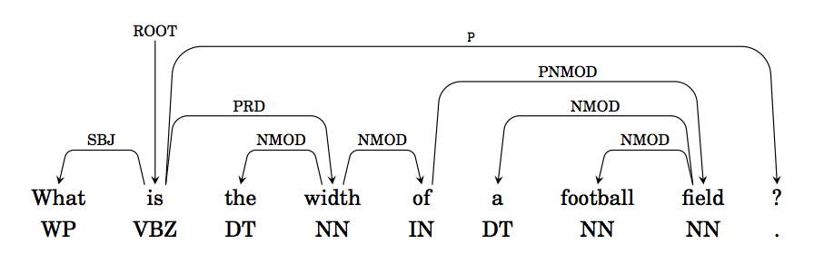
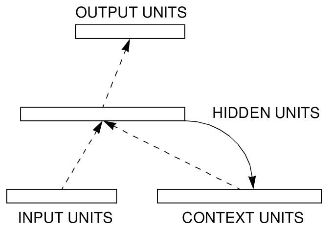
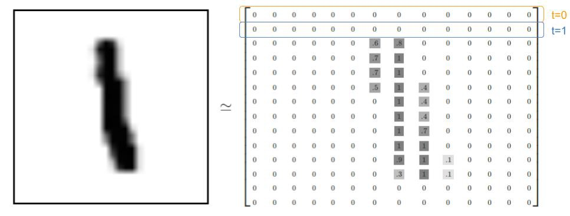
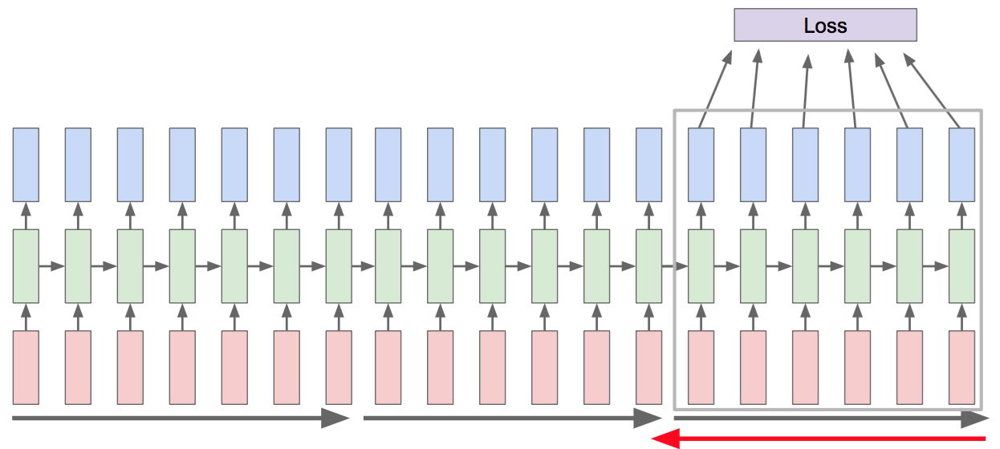

<h1> Lecture 9: Recurrent Neural Networks<br/> </h1>
<h2> Time-Dependent Data </h2> <ul> <li/> Almost all real-world data has a time-like dimension: For example: <ul> <li />Videos <img src="images/video_data.png" class=vsmall /> <li />Audio <img src="pli/some_soundwave.jpg" class=vsmall /> <li />Text  </ul> <li class=fragment /> So Time is just another dimension, like channels in images. But what is special about it? </ul>
<h2> How to Deal with Variable-Sized Dimensions?</h2> <ul> <li/> Time is a variable dimension. Until now, we dealt with data having static dimensions. There are two ways to deal with this: <ol> <li class=fragment /> Fix the size, truncate (pad) the data that has a larger (smaller) dimension. For example for size 2: <ul> <li/> Three data samples: [[1, 5, 6], [3,4], [3]] $\rightarrow$ [[1, 5], [3,4], [3, None]] <li /> Once the size is fixed, a feed-forward neural network can be used </ul> <li class=fragment /> Use a recursive algorithm: Feed in the data time step by time step and keep a memory of the previously fed data samples <ul> <li/> [[1, 5, 6], [3,4], [3]] $\rightarrow$ [[1,3,3],[5,4, -],[3,-, -] <li /> - is a special symbol means end-of-sequence. Recurrent neural networks are designed to deal with such data </ul> </ol> </ul> <div class=fragment ><p class=pl> This lecture will focus on approaches under 2.</div>
<h2> Recurrent Neural Network in Deep Learning </h2> <ul> <li/> What is the consequence of having a "loop" in the neural network graph? <li class=fragment /> Errors must be propagated through the loop! In the variable size dimension is time, errors need to be propagated to the past. </ul> <img src="images/RNN-rolled.png" class=medium /> <p class=ref>https://colah.github.io/posts/2015-08-Understanding-LSTMs/</p>
<h2> Recurrent Neural Networks in Deep Learning </h2> <img src="images/RNN-unrolled.png" /> <ul> <li/> RNNs can be unfolded to form a deep neural network <li/> The depth along the unfolded dimension is equal to the number of time steps. <li/> An output can be produced at some or every time steps. <li/> Depending on the output structure, different problems can be solved </ul>
<h2> Example Tasks</h2> <img src="images/rnn_tasks.jpeg" /> <ul> <li /> Can you find examples for each case </ul>
<h2> Simple Recurrent Neural Network </h2> <ul> <li/> Also called Elman RNN, these are the simplest RNNs.  <p class=ref> Elman, Finding Structure in Time <p> $$ \begin{split} h_t = \text{tanh}(W_{ih} x_t + W_{hh} h_{(t-1)} ) \end{split} $$ <li/> A simple recurrent network is simply a network whose output feeds back to itself <li/> Memory fades exponentially in time, and so RNNs have limited use cases. They are useful to understand the challenges of training RNNs. </ul>
<h2> Unrolled Neural Network </h2> <ul> <li /> We can use the same training framework as feed-forward networks by unrolling the variable-size dimension. <img src="images/RNN-unrolled.png" /> <p class=ref>https://colah.github.io/posts/2015-08-Understanding-LSTMs/</p> <li /> We apply back-propagation to the unrolled network. This is called Back-Propagation-Through-Time. <li /> Conceptual difference wrt feedforward networks: Parameters are shared along the horizontal axis. </ul>
<h2> Training a Simple Recurrent Neural Network </h2> <ul> <li/> For sequential tasks, Pytorch expects tensor to have the following dimensions: [time, batch, data] <li/> We will use the MNIST data, but feed the data in row by row.  <li/> Building the Simple RNN by "unrolling the loop" (Pytorch Tutorial) [](https://colab.research.google.com/github/pytorch/tutorials/blob/gh-pages/_downloads/a35c00bb5afae3962e1e7869c66872fa/char_rnn_generation_tutorial.ipynb#scrollTo=auLH9s12mrj://colab.research.google.com/drive/1KArdyQh2v5XlO595OYK2agTcQk4rBznm?usp=sharing) </ul>
<h2> Training Variable-Size Samples with Batches </h2> <ul> <li /> We would like to leverage the GPUs parallel capability through batches (as we always did) <li class=fragment /> But tensors cannot have variable sizes, i.e. [[2,3,4], [3,4]] cannot be stored as a tensor <li class=fragment /> We need to pad the data: [[2,3,4], [3,4,None]] and let PyTorch know that the GPU process should not do anything when None is encountered. <li class=fragment /> This requires padding, and packing sequences and involves some coding (we won't do it in this class)
<h2> RNNs and the Vanishing Gradients Problem </h2> <ul> <li /> We can use the same training framework as feed-forward networks by unrolling the variable-size dimension. <img src="images/RNN-unrolled.png" /> <p class=ref>https://colah.github.io/posts/2015-08-Understanding-LSTMs/</p> <li /> We apply back-propagation to the unrolled network. This is called Back-Propagation-Through-Time. <li class=fragment /> There are two problems <ul > <li /> Memory grows without bounds <li /> Vanishing gradients </ul> </ul>
<h2> Solving the Memory problem: Truncated Backpropagation </h2> <ul> <li /> We only backpropagate up to a certain point in the past  <li /> In this class, we won't have to do this because we work with small models </ul>
<h2> The Vanishing Gradients Problem</h2> <p>The temporal separation between targets and inputs makes training difficult. This is called the temporal credit assignment problem</p> <ul> <li /> Short-term dependencies <img src="images/RNN-shorttermdepdencies.png" class=small /> <li /> Long-term dependencies <img src="images/RNN-longtermdependencies.png" class=small /> <p class=ref>https://colah.github.io/posts/2015-08-Understanding-LSTMs/</p> <li /> In simple RNNs, memory decays exponentially, so it cannot learn log-term dependencies in practice. <p class=ref>Bengio et al. 1994</p> </ul> </div>
<h2> Perfect Integrator </h2> <ul> <li /> We <em>can</em> construct dynamics that keeps a perfect trace: $$ h_t = h_{t-1} +f(x_t) $$ but then we would be overwhelmed by noise <li class=fragment /> The central problem for training networks with memory is that we must choose which information we should remember. <li class=fragment /> But how can we choose what to remember if we don't know what we need to solve the problem?
<h2> Forget Gates </h2> <ul> <li /> Forget gates make storing and forgetting dynamic: $$ x_t = \sigma(a_t) \odot x_{t-1} + f(a_t) $$ <div class=row> <div class=column> <img src="images/LSTM3-gate.png" /> </div> <div class=column> <img src="https://ak6.picdn.net/shutterstock/videos/33064276/thumb/1.jpg" /> </div> </div> <li /> If $\sigma(a_t)=1$ we remember perfectly, at $\sigma(a_t)=0$ we erase $x_{t-1}$ <li /> $\sigma(a_t)$ is a layer of neurons that determines we remember. <li /> Forget gates are the basic building blocks of all "modern" RNNs </ul>
<h2> Long-Short Term Memory</h2> <ul> <li /> The LSTM is the solution to the long term dependency problem proposed by Hochreiter and Schmidhuber in 1997. It is still the state-of-the-art today. <li /> The LSTM builds on the idea of conveying the hidden state without modification. <li class=fragment /> A similar idea was used in a feed-forward network, do you remember which one? <blockquote class=fragment> Their Residual Net or ResNet is a special case of our Highway Net of May 2015, the first very deep feedforward networks with hundreds of layers. Highway nets are essentially feedforward versions of recurrent Long Short-Term Memory (LSTM) networks </blockquote> <ul />
<h2> Long-Short Term Memory</h2> <img src="images/LSTM3-chain.png" /> <p class=ref>https://colah.github.io/posts/2015-08-Understanding-LSTMs/</p> <ul> <li />The top horizontal line is the memory state, $C_t$ <li/> Let's go over the steps one by one </ul>
<h2> LSTM Walkthrough 1</h2> <img src="images/LSTM3-C-line.png" /> <p class=ref>https://colah.github.io/posts/2015-08-Understanding-LSTMs/</p> <ul> <li/> C is the memory state. <li/> It is easy for the information to pass unchanged <li /> The key building block is the gate discussed earlier </ul>
<h2> LSTM Walkthrough 2</h2> <img src="images/LSTM3-focus-f.png" /> <p class=ref>https://colah.github.io/posts/2015-08-Understanding-LSTMs/</p> <ul> <li /> The forget gate: we decide how much of the memory state we will forget. The forgetting factor is a function of the previous hidden state and the input </ul>
<h2> LSTM Walkthrough 2</h2> <img src="images/LSTM3-focus-i.png" /> <p class=ref>https://colah.github.io/posts/2015-08-Understanding-LSTMs/</p> <ul> <li /> $\tilde {C}_t$ determines the candidate new memories to add to $C_t$ <li /> $i_t$ is an input gate determining which values we add </ul>
<h2> LSTM Walkthrough 3</h2> <img src="images/LSTM3-focus-C.png" /> <p class=ref>https://colah.github.io/posts/2015-08-Understanding-LSTMs/</p> <ul> <li /> $C_t$ gets updated... </ul>
<h2> LSTM Walkthrough: Output</h2> <img src="images/LSTM3-focus-o.png" /> <p class=ref>https://colah.github.io/posts/2015-08-Understanding-LSTMs/</p> <ul> <li /> Output: combining memory state $C_t$, input and an output gate $o_t$. </ul>
<h2> Long-Short Term Memory Equations</h2> <div class=row> <div class=column> <img src="images/LSTM3-chain.png" /> </div> <div class=column> $$ \begin{array}{ll}\\\\ i_t = \sigma(W_{ii} x_t + W_{hi} h_{(t-1)} ) \\\\ f_t = \sigma(W_{if} x_t + W_{hf} h_{(t-1)} ) \\\\ g_t = \tanh(W_{ig} x_t + W_{hg} h_{(t-1)} ) \\\\ o_t = \sigma(W_{io} x_t + W_{ho} h_{(t-1)} ) \\\\ c_t = f_t \odot c_{(t-1)} + i_t \odot g_t \\\\ h_t = o_t \odot \tanh(c_t) \\\\ \end{array} $$ </div> <ul> <li /> The choices in LSTM are arbitrary, several variants of LSTMs exist <li /> LSTM models (and variants) available in PyTorch (Replace torch.nn.RNN with torch.nn.LSTM ) </ul>
<h2> Summary </h2> <ul> <li/> RNNs capture dependencies across a sequence (e.g. across "time") <li/> RNNs are trained by "unrolling them", making them equivalent to Feedforward networks, with "tied" weights. <li/> Training RNNs is difficult because sequence length translate into depth <li/> Truncated BPTT can overcome this difficulty, but at the cost of long-term dependencies <li/> LSTMs can overcome the long-term dependency issue by using a perfect integrator. </ul>